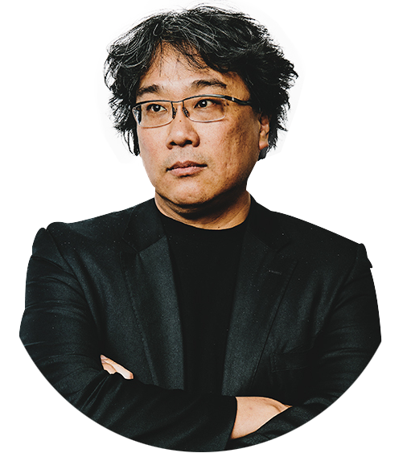

봉준호(奉俊昊)1969년 9월 14일(50세) 대구광역시 남구봉덕동
- 잠실고등학교(졸업) - 연세대학교 사회학(학사) - 한국 영화 아카데미
※ 2000년 영화 ‘플란다스의 개’ 데뷔대한민국의 영화 감독. 한국영화사에서 최고, 최다, 최초의 기록을 모두 석권한 아이콘이며, 예술성과 오락성 그리고 대중성과 독창성을 세계적으로 인정 받은 거장이다. 2000년 데뷔작 플란다스의 개에서 영화 전문가들에게 기대주로 주목 받았고, 마침내 2003년 살인의 추억의 비평과 흥행 성공으로 단숨에 스타 감독으로 발돋움했다. 그리고 2006년에 내놓은 괴물이 천만 관객을 돌파하여 비평과 함께 흥행에서도 최고의 감독 중 한 명이 되었다.
2009년에는 마더는 대중과 평단의 찬사를 받으며 각종 시상식과 비평가협회상을 휩쓸었다. 그후 2013년 한국영화 역사상 최고 제작비(437억)를 투입해 만들어진 설국열차로 한국영화의 영역을 확장 시키는 데 공헌을 했고, 2017년 옥자는 넷플릭스 스트리밍 서비스 영화 중 최초로 칸 영화제 경쟁부문에 진출하였다.
이후 2019년 기생충을 통해 한국영화 역사상 최초 칸 영화제 황금종려상을 수상했고, 국내 개봉 후에는 천만 관객까지 돌파하면서 몇 안 되는 쌍천만 감독 대열에 합류했다.
그리고 미국 개봉 후 그야말로 센세이션을 일으켰으며, 마침내 이듬해 2020년 아카데미 시상식에서 각본상, 국제영화상, 그리고 최고 영예인 감독상과 작품상을 수상하여 4관왕을 달성하여 역사를 만들어냈다.
누나(봉지희)의 인터뷰에 따르면, 어린 시절 봉준호는 '조용하고, 말수가 없었고, 느렸고, 공부는 굉장히 잘하고, 리더십도 있었지만, 특별히 끼가 있다거나 튀지는 않았다'고 한다. 아버지 서재에서 시중에 없던 영화, 건축, 디자인 관련 수입도서들과 같은 다양한 책을 읽으며 자랐다고 하며, 봉준호는 어렸을 때부터 그림, 문학, 음악을 다 좋아했다고 한다.
연세대에 '노란문'이란 영화 동아리를 만든 봉준호는 16mm 필름으로 첫 단편영화 《백색인(1993)》을 연출했다. 이후 한국영화아카데미에 11기로 입학했고, 16mm 단편영화 《프레임 속의 기억(1994)》 및 《지리멸렬(1994)》을 연출했다. 한국영화아카데미를 졸업한 봉준호는 1999년까지 충무로에서 조연출과 각본 등의 활동을 하며 경력을 쌓았다. 우노필름(싸이더스의 전신) 차승재 대표의 눈에 띈 봉준호는 우노필름에서 《플란더스의 개(2000)》로 남들보다 일찍(31세) 장편영화 데뷔를 했다. 봉준호는 《플란더스의 개》의 흥행 실패로 위기에 처했지만, 봉준호의 재능을 믿은 차승재 대표가 다시 기회를 줬고, 이때 연출한 영화가 《살인의 추억》이다. 이 영화의 흥행 성공으로 봉준호는 대중적으로 널리 알려지게 된다. 이후 2006년에 《괴물》로 1300만 명의 관객을 동원해 한국의 대표 감독 반열에 올라선다.
2019년 《기생충》으로 제72회 칸 영화제에서 한국영화 100년 역사상 최초로 최고상인 황금종려상을 수상하면서 역사적인 수상레이스가 시작된다.
이후 2020년 1월, 골든 글로브 시상식에서 외국어 영화상을 수상했으며 미국 배우 조합상 시상식에선 자신의 작품에 출연한 10명의 배우들과 함께 앙상블상 수상의 현장에 함께했다. 2월 초 영국 아카데미 영화상(BAFTA)에선 한진원과 함께 각본상을, 그리고 작품은 외국어 영화상을 수상했다.
대망의 2020년 2월 9일(현지 날짜), LA 돌비 극장에서 열린 92회 아카데미 시상식(OSCARS)에서 예상했던 대로 각본상과 국제영화상을 수상했고, 다소 어려울거라 생각되었던 감독상까지 수상의 영예를 안으며 최고의 하루를 보냈다. 특히나 감독상 부문은 영화 1917의 샘 멘데스를 제치고 수상한 결과라 더 뜻깊은 순간이었다. 그리고 기대를 모았던 대망의 작품상까지 수상하며 6개 부문 노미네이트 중 4개 부문의 수상이라는 엄청난 기록을 남겼다. 기생충의 작품상 수상은 아카데미 92년 역사상 처음으로 외국어 영화가 작품상을 수상한 케이스이다. 그동안 많은 외국어 영화상 작품이 작품상에 도전했고, 또 번번이 고배를 마셨으나 기생충이 그 한계를 완전히 부수어버리며 새로운 역사의 중심에 섰다.
- 2020년 제92회 아카데미 시상식 작품상 (기생충) - 2020년 제92회 아카데미 시상식 감독상 (기생충) - 2020년 제92회 아카데미 시상식 국제장편영화상 (기생충) - 2020년 제92회 아카데미 시상식 각본상 (기생충) - 2020년 제73회 영국 아카데미 시상식 외국어영화상 (기생충) - 2020년 제73회 영국 아카데미 시상식 각본상 (기생충) - 2020년 제77회 골든글로브 시상식 외국어영화상 (기생충) - 2020년 제45회 프랑스 세자르 영화제 시상식 외국어영화상 (기생충) - 2020년 20 65회 이타릴아다비드 디 도나텔로시상식 외국어영화상 (기생충) - 2020년 미국작가조합상(WGA) 각본상 (기생충)
more- 2005 도쿄 국제 영화제 심사위원 - 2006 상하이 국제 영화제 심사위원 - 2008 전주 국제 영화제 심사위원 - 2009 제천 국제 영화제 명예 홍보대사 - 2009 산세바스티안 국제 영화제 심사위원 - 2010 뉴욕 국제 영화제 마스터 클래스 - 2010 런던 국제영화제 마스터 클래스 - 2011 선댄스 국제 영화제 심사위원 - 2011 칸 국제영화제 황금카메라상 심사위원장 - 2013 에든버러 국제 영화제 심사위원장
- 2013 마르델플라타 국제 영화제 마스터 클래스 - 2013 마르델플라타 국제 영화제 심사위원 - 2014 부천 국제 판타스틱 영화제 심사위원장 - 2014 부산 국제 영화제 심사위원 - 2015 베를린 국제 영화제 마스터 클래스 - 2015 베를린 국제 영화제 심사위원 - 2017 토론토 국제 영화제 마스터 클래스 - 2019 뮌헨 국제 영화제 마스터 클래스 - 2019 뤼미에르 영화제 마스터 클래스 - 2020 로테르담 영화제 마스터 클래스